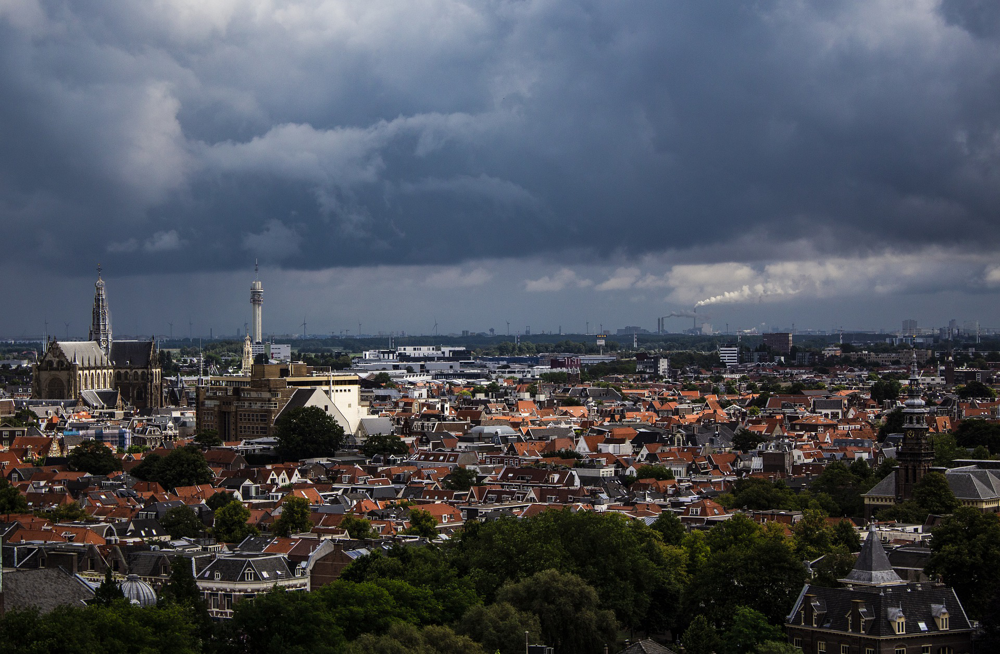
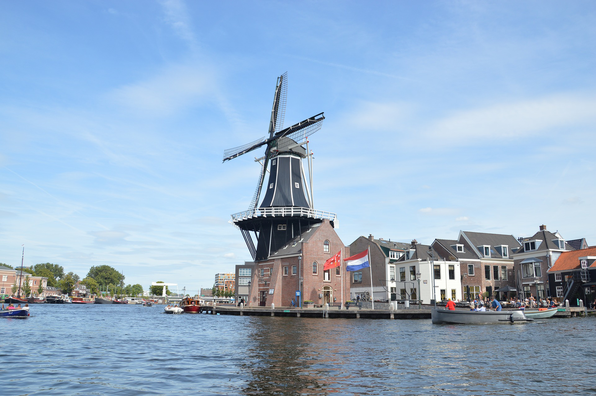
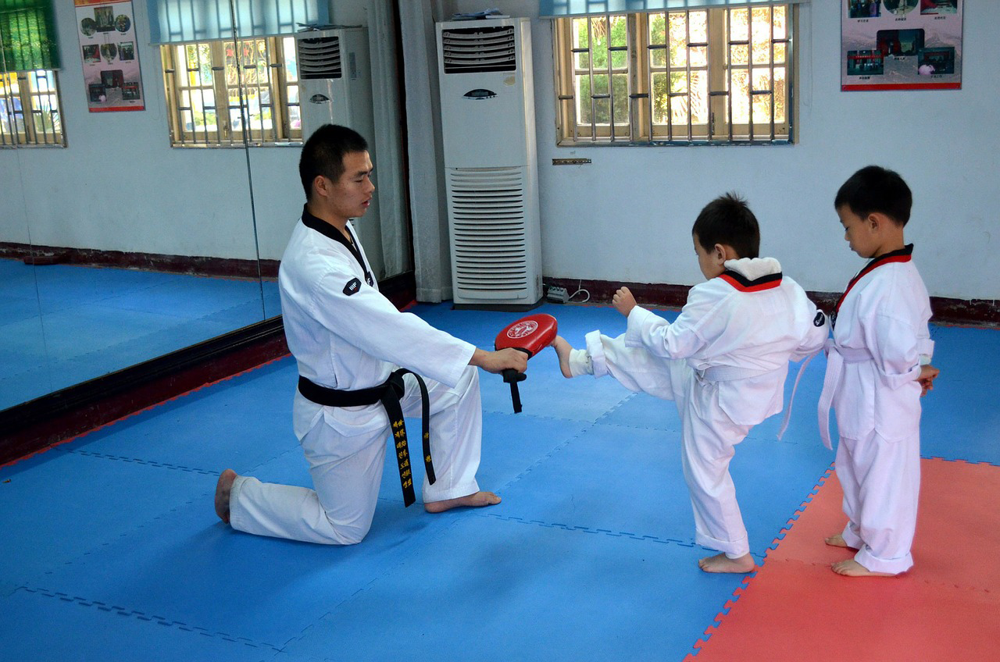
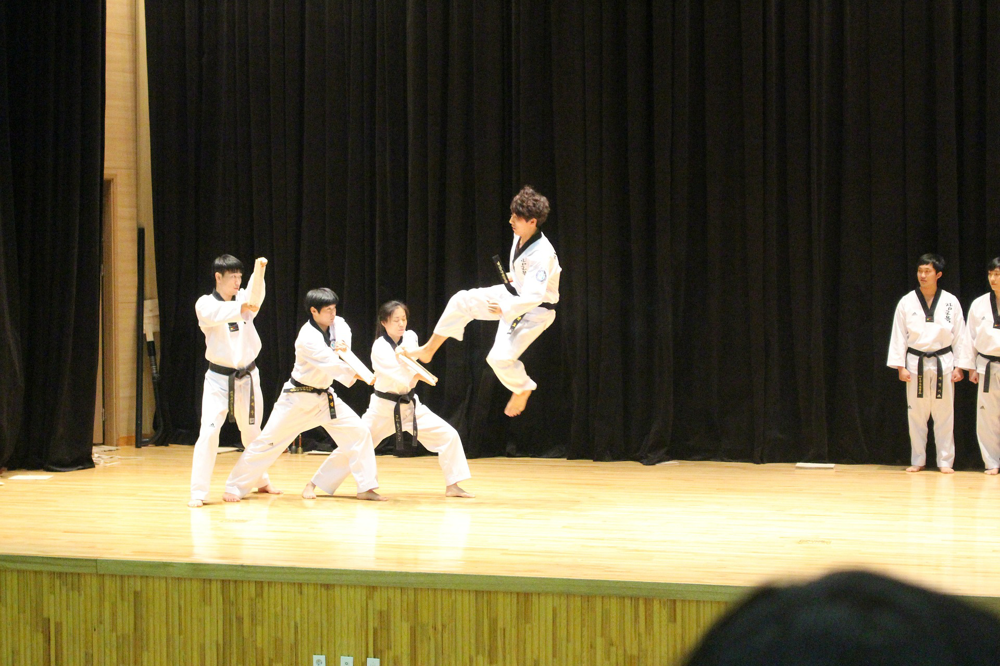
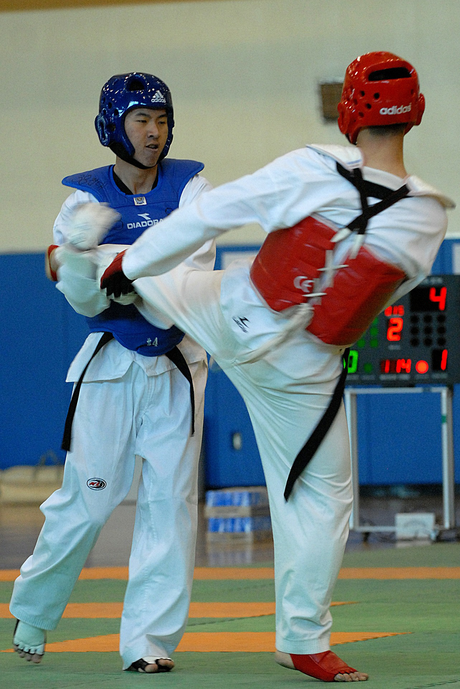
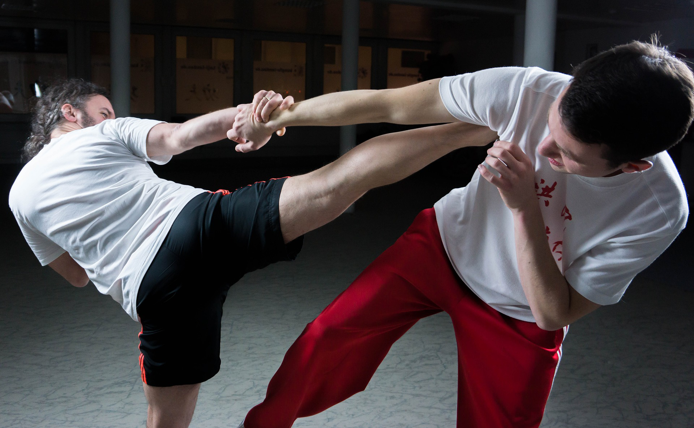
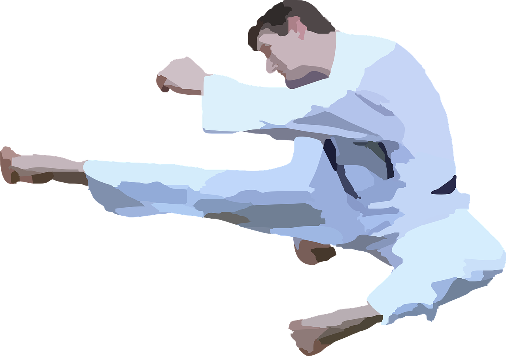
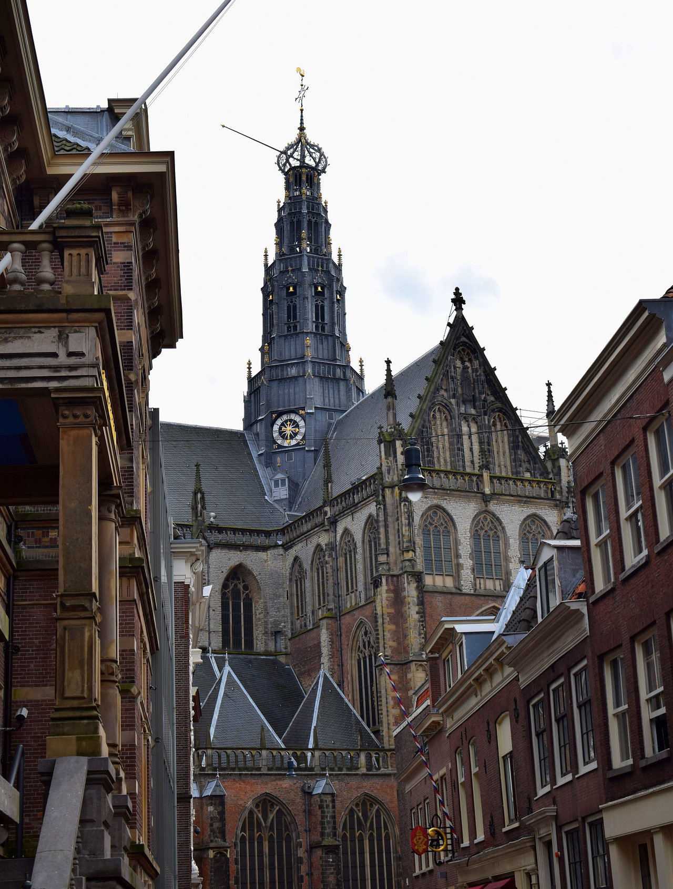
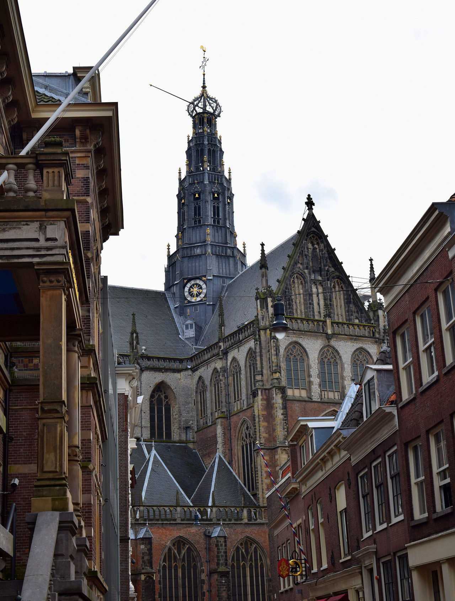

About the city


Haarlem is one of many states/provinces in the netherlands and its the capital of north holland. Haarlem
unique location on the spaarne river gave it the name(spaarne city). it is also located 20 km away for
Amesterdam.
Haarlem is also known for its beautifull architecture, in addition to that, it has a lot of historical
sites like (Groote market), (ameserdamse poort) etc .
All of this combined made Haarlem a great distenation for people who enjoy what the city has to offer,
Mudoin Taekwondo Haarlem

this club offer taekwondo lesson for all the ages for a small amount of money.
DragonGym

DragonGym offer lessons for different types of martial arts including MMA , Muay Thai , Kickboxing ,
etc.
Taekwondo Bond Nederland

this club is the place you want to go to if you want to build a taekwondo career. The club is located in
Haarlem centre
Eagle Gym Haarlem

Eagle Gym offers the best Kickboxing and taekwondo lessons for a good price.
Enoch Martial Arts
Enoch Martial Arts is the place to go if you want to learn korean style martial arts like (Kyusho jitsu)
, (Hapkido) and off course Taekwondo.
HWA-Rang Dragon
This club offers different types of martial arts including (Brazilian Jiu Jitsu), (Taekwondo) and
(Mudo).
Black Bear Taekwondo

Black Bear Taekwondo club is the ideal place to learn Taekwondo for international students.
Gyeong-Rye Den Haag Taekwondo
.
Cheo Go Kwan Taekwon-do

check this club for the best taekwondo experience.
Chung do Kwan

This website is the best choice for women who want to learn taekwondo.
 
